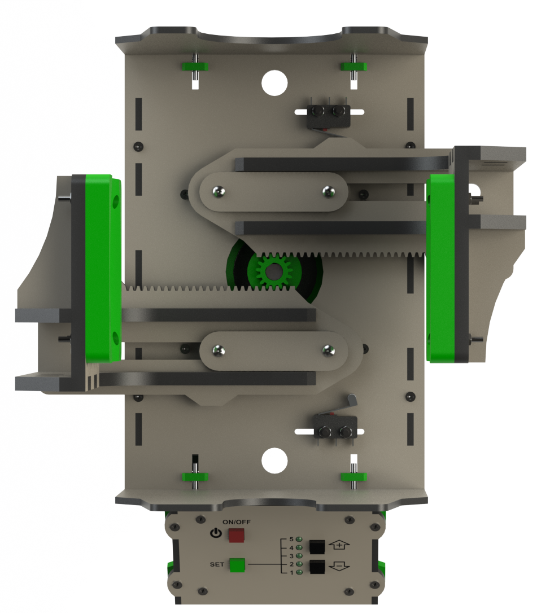
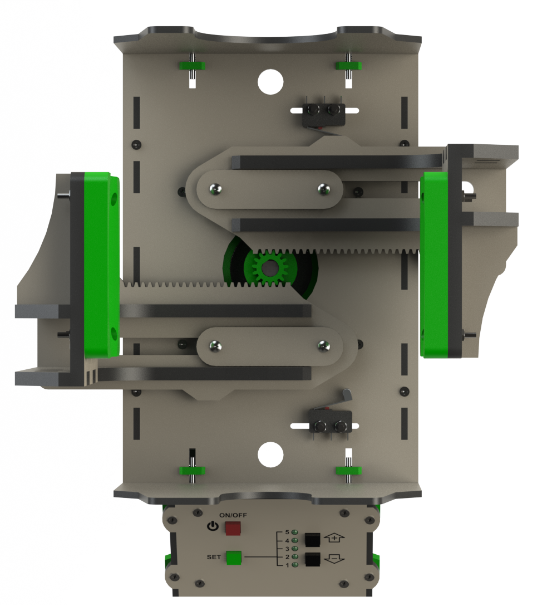

Portugues | English
Ventilador pulmonar projetado pela equipe de engenharia da HI Tecnologia e da Jacques Design, com o objetivo de auxiliar no combate a pandemia do vírus corona.
Nosso objetivo foi criar um ventilador pulmonar simples, barato (custo estimado inferior a R$1000,00) e que possa ser reproduzido em escala, por quem tiver disponibilidade, de forma a auxiliar no tratamento dos enfermos do COVID-19.
Deve ser observado que, apesar de atuarmos nos setor de automação industrial por vários anos e termos obtido alguma orientação e ajuda de profissionais de saúde, não temos expertise em equipamentos médicos e portanto, podem ser necessárias funcionalidades adicionais ou ajustes no projeto corrente. Ajuda neste sentido é bem vinda.
Toda documentação e o repositório deste projeto podem ser usados sem restrições. O projeto corrente esta funcional mas continuamos trabalhando em aprimorar o produto com novas funcionalidades e mais testes e recursos de segurança. Enquanto houverem pessoas interessadas neste projeto nossa equipe de engenharia estará dando suporte ao mesmo de forma gratuita.
Os nossos mais sinceros agradecimentos a todas as pessoas que tem nos auxiliado neste processo.
Para chegarmos ao estágio atual foram desenvolvidos 7 protótipos mecânicos e liberadas 2 versões do produto. A versão 1 foi liberada a aproximadamente 15 dias atrás. Durante os testes que continuamos realizando após a liberação da versão 1 constatamos que o esforço aplicado ao motor utilizado para movimentar o AMBU estava mantendo tanto o motor de passo quanto o driver utilizado operando em condições severas, tornando-se inadequado para um equipamento médico. Começamos então avaliar a possibilidade de utilização de motores maiores que trabalhassem com mais folga. Este estudo nos levou a versão 2 do ventilador. Verificamos que é mais barato e seguro utilizarmos 2 motores menores (com seus respectivos drivers) do que um motor maior com um driver e fonte com maior potência. Desta forma, a versao 2 utiliza 2 motores, 2 drivers e 2 fontes, permitindo operação com redundância no caso de falha, viabilizando manter o paciente ventilado (com restrições de volume) mesmo com falha em um dos motores, drives ou fontes, enquanto é providenciada a troca do equipamento.
Toda documentação e o repositório deste projeto podem ser usados sem restrições. O projeto de aplicação não esta integralmente concluído e continuamos trabalhando neste processo. Enquanto houverem pessoas interessadas neste projeto nossa equipe de engenharia estará dando suporte ao mesmo de forma gratuita.
Nosso único objetivo com este trabalho é contribuir para minimizar a perda de vidas com esta epidemia.
HI Tecnologia
Jacques Design
 

Toda documentação e o repositório deste projeto podem ser usados sem restrições. O projeto não esta integralmente concluído e continuamos trabalhando neste processo. Enquanto houverem pessoas interessadas neste projeto nossa equipe de engenharia estará dando suporte ao mesmo de forma gratuita.
Nosso único objetivo com este trabalho é contribuir para minimizar a perda de vidas com esta epidemia.
HI Tecnologia
Jacques Design